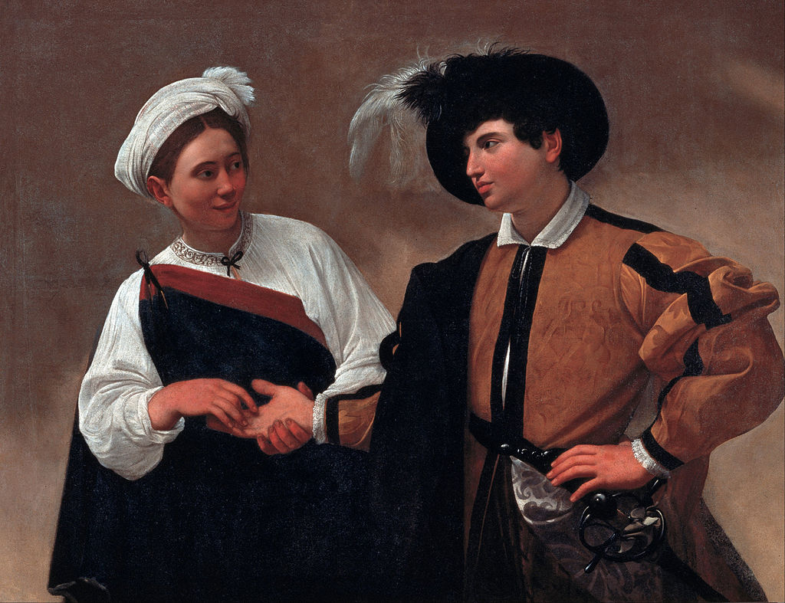

<head>
<meta charset="UTF-8" />
<meta name="keywords" content="drawing, painting" />
<meta name="description" content="drawings by Sunjy" />
<title>Sunjy</title>
<link rel="shortcut icon" type="image/x-icon" href="../../mImages/mCommon/favicon.ico" media="screen" />
<link rel="stylesheet" type="text/css" href="../../mCsses/mCommon/mCssA.css" />
<link rel="stylesheet" type="text/css" href="../../mCsses/mCommon/mCssB.css" />
<link rel="stylesheet" type="text/css" href="../../mCsses/mCommon/mCssC.css" />
<link rel="stylesheet" type="text/css" href="../../mCsses/mCommon/mCssD.css" />
<link rel="stylesheet" type="text/css" href="../../mCsses/mContent/mCssA.css" />
<link rel="stylesheet" type="text/css" href="../../mCsses/mContent/mCssB.css" />
<link rel="stylesheet" type="text/css" href="../../mCsses/mContent/mCssC.css" />
<link rel="stylesheet" type="text/css" href="../../mCsses/mContent/mCssD.css" />
</head>
<script type="text/javascript" src="../../mScripts/mContent/mContentAA.js" /></script>
<script type="text/javascript" src="../../mScripts/mContent/mContentAB.js" /></script>
<script type="text/javascript" src="../../mScripts/mContent/mContentAC.js" /></script>
<script type="text/javascript" src="../../mScripts/mContent/mContentAD.js" /></script>
<script type="text/javascript"></script> 
<script type="text/javascript">
document.write('<div class="mImgAbsolute"></div>');
/*
document.write('<p class="mFontSizeBColor" />From a white paper...</p>');
document.write('<table class="center"><tr><td>');
document.write('');
document.write('</td></tr></table>');
*/
</script>


<script type="text/javascript">
document.write('<p class="mFontSizeBColor" />Good Luck</p>');
document.write('<p class="mFontSizeSColor" />“Good Luck” by Caravaggio was the first version, which shows the girl can be seen removing his ring. Caravaggio was one of the founders of genre painting in European art.<br><br>At the time, Genre Paintings mainly depicted scenes of everyday life, but with a hidden or underlying meaning intended to communicate a moral theme.<br><br>The theme of a young man inexperienced in the affairs of life encountering a lady who is experienced and shrewd proved to be a favorite subject.<br><br>The young boy is carried away by the gentle touch of her fingers. He does not notice that he is being relieved of his ring.<br><br>The composition does not include any background details to indicate the time and place but instead is focused on the encounter of two very different individuals, participating in an exchange that is timeless and universal.<br></p>');
document.write('<table class="center" /><tr><td>');
document.write('<br>At the time, Genre Paintings mainly depicted scenes of everyday life, but with a hidden or underlying meaning intended to communicate a moral theme.<br><br>The theme of a young man inexperienced in the affairs of life encountering a lady who is experienced and shrewd proved to be a favorite subject.<br><br>The young boy is carried away by the gentle touch of her fingers. He does not notice that he is being relieved of his ring.<br><br>The composition does not include any background details to indicate the time and place but instead is focused on the encounter of two very different individuals, participating in an exchange that is timeless and universal.<br>" />');
document.write('</td></tr></table>');
</script>


